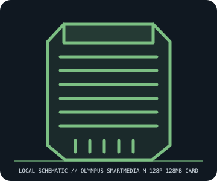

[ REMOVABLE MEDIA // MODEL-SPECIFIC RECORD ]
Olympus SmartMedia M-128P 128 MB Card
Olympus 3.3 V SmartMedia removable flash card, 128 MB capacity. This catalog entry distinguishes the removable medium from its drive/reader and calls out model-specific fit and format caveats.

IDENTIFICATION: Transcribe the entire model/part number, capacity, generation and revision from the label or packaging. Confirm the exact host-device manual before inserting or writing.
Format, capacity and compatibility
| Product / part ID | Olympus SmartMedia M-128P 128 MB Card |
|---|---|
| Generation / format | Olympus 3.3 V SmartMedia removable flash card, 128 MB capacity |
| Capacity and medium | Olympus M-128P, 128 MB SmartMedia (SSFDC) card, 3.3 V generation. SmartMedia has exposed contact pads and no onboard controller; the host supplies card addressing/management. |
| Compatibility | Requires a 3.3 V SmartMedia slot and device firmware capable of 128 MB cards. Many early SmartMedia cameras support only smaller capacities; Olympus model-by-model compatibility chart/manual must be checked. Do not insert into 5 V-only SmartMedia equipment. |
| Version and model caveat | 128 MB is the upper SmartMedia card capacity class. Similar xD-Picture Card or Memory Stick shells are not compatible; SmartMedia cards rely heavily on host controller/firmware and filesystem support. |
Handling and preservation
Handle edges only and protect exposed contacts from oils, static, and abrasion; store in a rigid case. Keep away from bending, moisture, and hot insertion. Image with a known-supported reader, verify file integrity, and keep more than one copy because obsolete SmartMedia readers are increasingly scarce.
- Preserve original packaging, label, acquisition notes and any write-protect state; photograph the media before use.
- Make at least two independent copies of valuable data, verify checksums, and periodically test a restore. A removable cartridge or card alone is not an archival strategy.
Model and version notes
128 MB is the upper SmartMedia card capacity class. Similar xD-Picture Card or Memory Stick shells are not compatible; SmartMedia cards rely heavily on host controller/firmware and filesystem support.
Standards and product-family sources establish the generation; exact model manuals, labels, regional revisions, firmware, interface and host support determine actual interchangeability.
Sources and standards
- Olympus SmartMedia compatibility chartCompatibility chart reproduces Olympus camera model/capacity support; the individual camera manual is definitive.
- OM SYSTEM — Product support and manualsManufacturer support entry point for camera manuals and card-capacity limits.
Manufacturer and standards references are preferred; archival manuals or museum records are identified when products are discontinued. Capacity and compatibility claims are scoped to the specific SKU and generation named above.